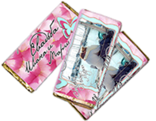
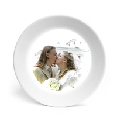
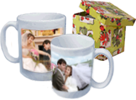
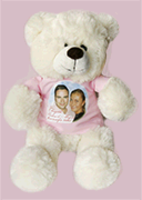
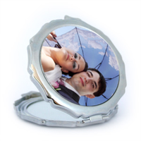
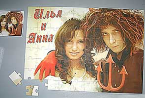
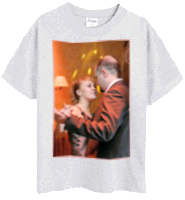

Имея хорошие фотографии, всегда можно придумать оригинальный и очень милый подарок,
который никого не оставит равнодушным. Сувениры с фото можно дарить по любым поводам:
день рождения, день св. Валентина, свадебный подарок, подарки гостям и просто на память.
Идеи оригинальных фотосувениров:

Шоколад в именной обертке с вашей фотографией

Керамическая тарелка
с фотографией

Кружка
с фотографией и текстом: пожеланиями, поздравлениями и подписями
Карманные календарики,
в которых можно обозначить памятные для вашей семьи даты

Мягкая игрушка
с фотографией на мини-футболке — очень милый подарок
Магниты на холодильник
станут памятным подарком к любому празднику или событию

Карманное зеркало
с фотографией
Сумка из ткани
с фото-принтом

Паззл
с фотографией
Гости уже собрались в ресторане, а свадебный кортеж не подъехал?
Сбор паззла с фотографией молодоженов развлечет и увлечет ожидающих.
Подушка
с романтичной фотографией

Футболка
с тематической фотографией и надписью может стать памятным подарком,
а также элементом развлекательной программы.